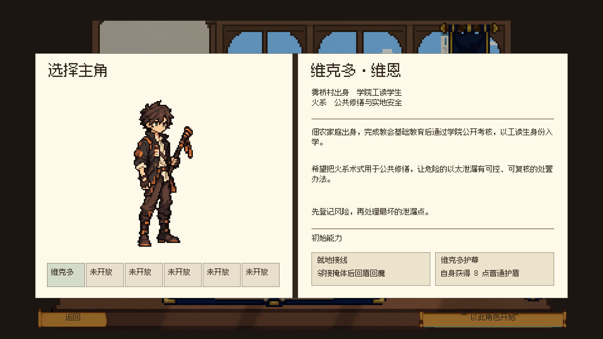

以太 · 开书与战斗外界面
同一书桌场景、浅色纸面、棕色细线和青铜色按钮。点击下方标签查看 Unity 实际截图。

角色档案：左右书页，立绘、角色队列与固定配置。
开始游戏 → 封面抬起、左页展开 → 镜头推进 → 角色档案
实现与验证范围
开书为约 1.3 秒的书脊铰链演出，采用现有像素素材切片，在原生 320×180 场景内渲染。三批独立生图动画原料因网格或形状不稳定淘汰，没有导入游戏。
真实按钮验证：开始、角色确认、进入地图、背包及设置返回；继续游戏恢复到未完成地图。服务、百科、术式、奖励和结算截图使用隔离的内存测试状态，未作为整轮通关证据。玩家存档已保护，音量恢复到验证前 80%。
1920×1080 主场景六区域统一 6px 网格检查通过；地图移除常驻百科入口，阶段显示“学院”。原有品牌片头与世界开场影片保留。